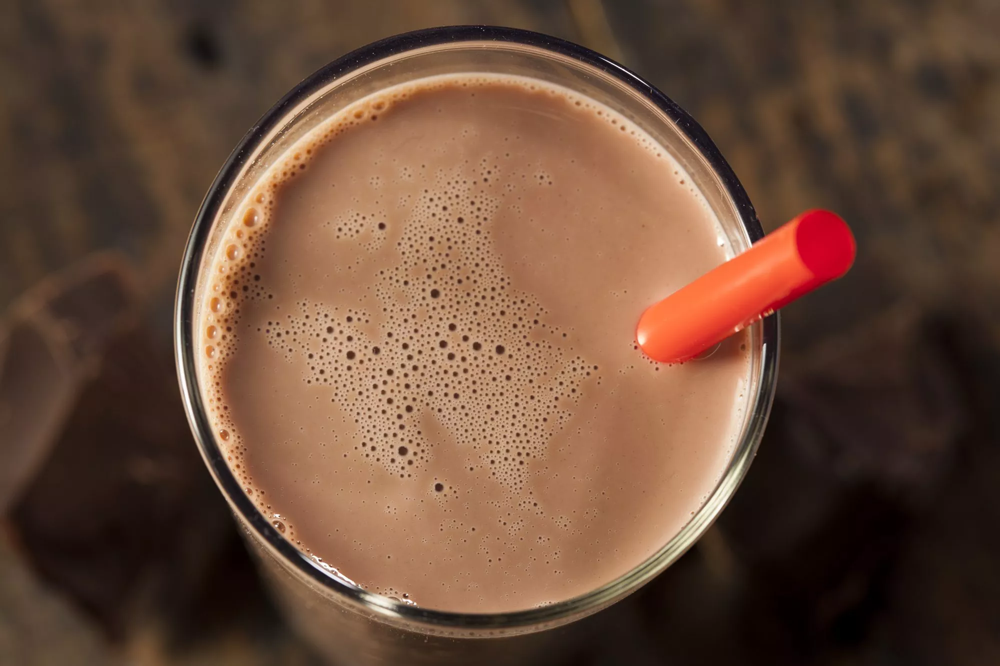

Chocolate Milk Recipe

Desciption
Chocolate milk is easy to make at home from scratch, and you don't need a bottle of chocolate syrup.
This recipe is made with real cocoa powder and just a little sugar for sweetness. Both kids and adults are going
to love its taste.
Ingredients
- 12 ounces of milk, any type
- 1 tablespoon unsweetened cocoa powder
- 2 teaspoons confectioners' sugar
Steps
- Gather the ingredients.
- Pour the milk into a glass and slowly add the cocoa powder while blending with an immersion blender/ spoon /
whisk.
- Add powdered sugar until well blended.
- Serve immediately or cover and place in the refridgerator until ready to drink.